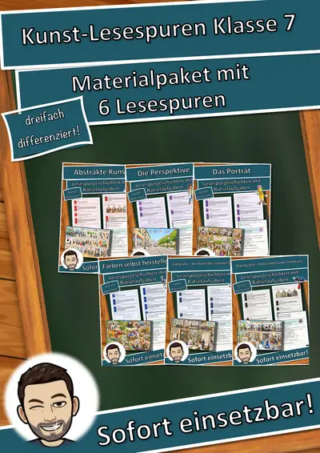
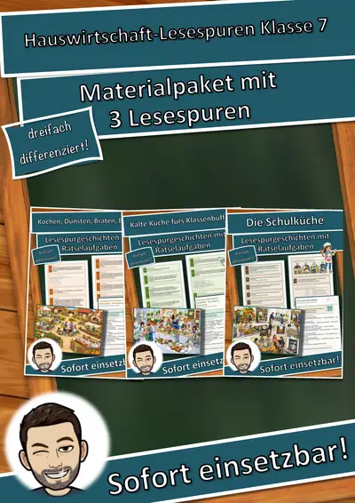
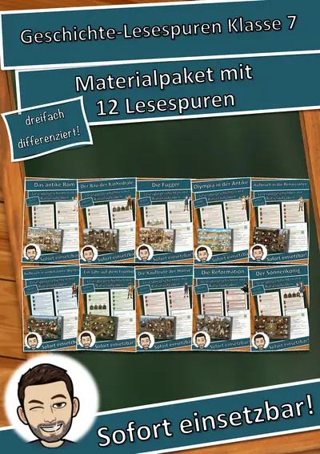
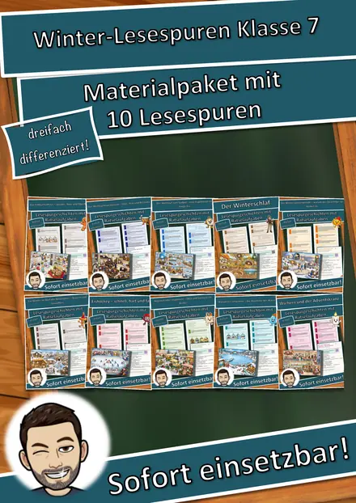
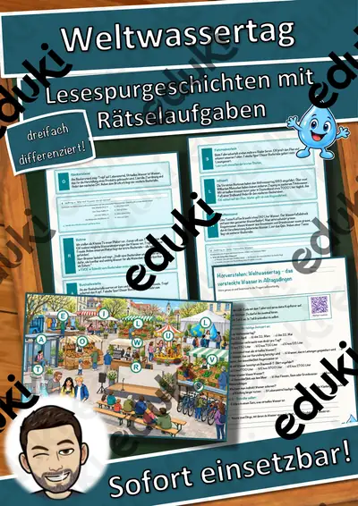
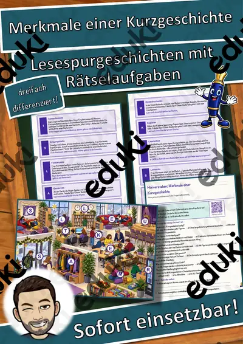

Materialpaket Lesespurgeschichten Technik Klasse 7: 3 Lesespuren mit Rätselaufgaben, dreifach differenziert

Materialpaket Lesespurgeschichten Sport Klasse 7: 7 Lesespuren mit Rätselaufgaben, dreifach differenziert

Materialpaket Lesespurgeschichten Physik Klasse 7: 6 Lesespuren mit Rätselaufgaben, dreifach differenziert

Materialpaket Lesespurgeschichten Musik Klasse 7: 8 Lesespuren mit Rätselaufgaben, dreifach differenziert

Materialpaket Lesespurgeschichten Kunst Klasse 7: 6 Lesespuren mit Rätselaufgaben, dreifach differenziert

Materialpaket Lesespurgeschichten Informatik Klasse 7: 8 Lesespuren mit Rätselaufgaben, dreifach differenziert

Materialpaket Lesespurgeschichten Hauswirtschaft Klasse 7: 3 Lesespuren mit Rätselaufgaben, dreifach differenziert

Materialpaket Lesespurgeschichten Geschichte Klasse 7: 12 Lesespuren mit Rätselaufgaben, dreifach differenziert

Materialpaket Lesespurgeschichten Ethik Klasse 7: 7 Lesespuren mit Rätselaufgaben, dreifach differenziert

Materialpaket Lesespurgeschichten Erdkunde Klasse 7: 7 Lesespuren mit Rätselaufgaben, dreifach differenziert

Materialpaket Lesespurgeschichten Deutsch Klasse 7: 4 Lesespuren mit Rätselaufgaben, dreifach differenziert

Materialpaket Lesespurgeschichten Biologie Klasse 7 – Der Mensch und seine Gesundheit: 10 Lesespuren mit Rätselaufgaben, dreifach differenziert

Materialpaket Lesespurgeschichten Biologie Klasse 7 – Tiere und Lebensräume: 7 Lesespuren mit Rätselaufgaben, dreifach differenziert

Materialpaket Winter und Advent für die 7. Klasse: 10 Lesespurgeschichten mit Rätselaufgaben fächerübergreifend (Weihnachtsoratorium, Südpol, Eishockey & mehr)

Bohren an der Ständerbohrmaschine – sicher und genau – Lesespurgeschichte mit Rätselaufgaben (Klasse 7)

Das Lebkuchenhaus – Quader, Netz und Oberfläche – Lesespurgeschichte mit Rätselaufgaben (Klasse 7)

Der Jahresrückblick – eine Radiosendung entsteht – Lesespurgeschichte mit Rätselaufgaben (Klasse 7)

Der Wettlauf zum Südpol – eine Expedition ins ewige Eis – Lesespurgeschichte mit Rätselaufgaben (Klasse 7)

Lantern Night Adventure – Lesespurgeschichte mit Rätselaufgaben auf Englisch (Klasse 7)

Weltwassertag – das versteckte Wasser in Alltagsdingen – Lesespurgeschichte mit Rätselaufgaben (Klasse 7)

Warum Eis schwimmt – die Anomalie des Wassers – Lesespurgeschichte mit Rätselaufgaben (Klasse 7)

Volksmusik in den Alpen – Jodeln, Hackbrett und Alphorn – Lesespurgeschichte mit Rätselaufgaben (Klasse 7)

Der Kalender – wie Caesar und Gregor das Jahr ordneten – Lesespurgeschichte mit Rätselaufgaben (Klasse 7)

Merkmale einer Kurzgeschichte – Lesespurgeschichte mit Rätselaufgaben (Klasse 7)

Das Weihnachtsoratorium – Chor, Arie und Rezitativ – Lesespurgeschichte mit Rätselaufgaben (Klasse 7)

Ein Winter im Dorf des Mittelalters – Bauern und Grundherr – Lesespurgeschichte mit Rätselaufgaben (Klasse 7)

Das neue Smartphone – sicher einrichten – Lesespurgeschichte mit Rätselaufgaben (Klasse 7)

Die Wintersonnenwende – warum der Dezember so dunkel ist – Lesespurgeschichte mit Rätselaufgaben (Klasse 7)

Eishockey – schnell, hart und fair – Lesespurgeschichte mit Rätselaufgaben (Klasse 7)

Wichern und der Adventskranz – Hilfe für Kinder in Not – Lesespurgeschichte mit Rätselaufgaben (Klasse 7)
Keine Materialien gefunden – versuch einen anderen Suchbegriff oder Filter.
Themen, die Jugendliche ansprechen
Mit der 7. Klasse beginnt die Phase, in der Themen persönlicher werden: Gesundheit, Medien, Gesellschaft. Das spiegelt sich in dieser Seite wider, ohne dass das Handwerk vergessen wird.
Biologie und Deutsch
Die Biologie führt mit „Rauchen und Vapes“, „Organspende“ und „Der Winterschlaf“ in Fragen von Gesundheit und Natur. Das „Materialpaket Winter und Advent für die 7. Klasse“ liefert zehn Lesespurgeschichten. Deutsch bringt „Merkmale einer Kurzgeschichte“, „Der Jahresrückblick“ und „Volksmusik in den Alpen“.
Medien, Politik, Geschichte
Informatik: „Das neue Smartphone“, „Prüfziffern“, „Chatbots und Sprachassistenten“, „Ein eigenes Spiel programmieren“. Politik: „Bundestagswahl“ und Steckbriefe zu Regierungsämtern. Geschichte: „Der Kalender“, „Ein Winter im Dorf des Mittelalters“, „Olympia in der Antike“ und „Das Handwerk und die Zünfte“.
Erdkunde, Kunst, Sport, Englisch
Erdkunde bietet „Der Wettlauf zum Südpol“, „Weltwassertag“, „Regional oder importiert“ und „Die Weinlese“. Kunst: „Kalligrafie“, „Abstrakte Kunst“, „Kunst der Renaissance“. Sport: „Eishockey“, „Klettern sichern“, „Wassersport“. Englisch: „Lantern Night Adventure“, „Bonfire Night“ und der „Klassenarbeitstrainer Englisch Klasse 7“.
Gespräche anstoßen
Viele Titel der 7. Klasse eignen sich als Gesprächsanlass. Ein Text zu Gesundheit oder Medien wird zur Diskussion, wenn die Lücken gefüllt sind und die Klasse über das Gelesene spricht. Die Aufgaben fragen deshalb oft nach einer eigenen Meinung. Für ruhigere Phasen gibt es handwerklich orientierte Kunst- und Sportideen, für Prüfungsnähe die Trainings im Englischbereich. Filtere nach Fach, um schneller zu finden, was du brauchst.
Material für verschiedene Lerntypen
Wer lieber hört, nutzt die Audiodatei zum Lückentext. Wer lieber tüftelt, greift zu Informatik oder Kunst. Wer sich auf Prüfungen vorbereiten will, nimmt die Trainings. So bleibt die Klasse bei einem Thema, geht aber unterschiedliche Wege.
Häufige Fragen
Sind sensible Themen wie Rauchen altersgerecht aufbereitet?
Sie sind sachlich und ohne Dramatisierung geschrieben und eignen sich als Gesprächsgrundlage.
Gibt es einen Klassenarbeitstrainer?
Ja, für Englisch zu Present Perfect und Future. Weitere Prüfungstrainings gibt es in höheren Klassen.
Eignet sich das Material für Wochenplanarbeit?
Ja, die Lesespuren lassen sich in Teilen oder als Ganzes einplanen.
Gibt es Politikmaterial schon in Klasse 7?
Ja, vor allem Steckbriefe zu Ämtern und Wahlen.